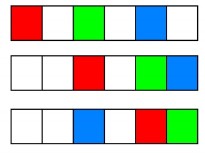

有n个格子，现在用若干种颜色对这些格子的一部分染色，若染了k个格子，那么能够得到a_k的分数。设b_i表示恰
好用i种颜色进行染色的所有不同方案的分数和。当两种方案染色的格子数不同，或将染色了的格子按照编号从小
到大排列后有任意一对对应的格子颜色不同，就称这两种方案是不同的。特别地，用0种颜色只有一种方案，就是
染0个格子，即b_0=a_0。

如图，白色表示没有染色的格子，第一种方案与第二种是相同的，与第三种是不同的。
现在给出b_0,b_1,b_2...b_n在模998244353意义下的值，你需要求出a_0,a_1,a_2...a_n在模998244353意义下的值,答案显然唯一。